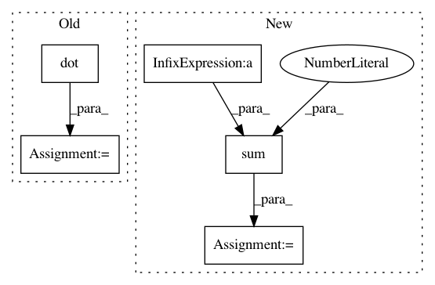

6dfa3d3e9a6a668ca6380134da7db7b63fad7f6a,tensorly/decomposition/_nn_cp.py,,non_negative_parafac_hals,#Any#Any#Any#Any#Any#Any#Any#Any#Any#Any#Any#,294
Before Change
hals_nnls_exact(tl.transpose(mttkrp), pseude_inverse, tl.transpose(factors[mode]),
maxiter=5000)[0])
factors_norm = tl.sum(tl.sum(pseude_inverse * tl.dot(tl.conj(tl.transpose(factors[mode])), factors[mode])))
rec_error = norm_tensor ** 2 + factors_norm - 2 * tl.dot(tl.tensor_to_vec(factors[mode]),
tl.tensor_to_vec(mttkrp))
rec_error = rec_error ** (1 / 2) / norm_tensor
if tol:
rec_errors.append(rec_error)
After Change
if tol:
factors_norm = cp_norm((weights, factors))
iprod = tl.sum(tl.sum(mttkrp*factor, axis=0)*weights)
rec_error = tl.sqrt(tl.abs(norm_tensor**2 + factors_norm**2 - 2*iprod)) / norm_tensor
rec_errors.append(rec_error)
if iteration > 1:
In pattern: SUPERPATTERN
Frequency: 4
Non-data size: 5
Instances
Project Name: tensorly/tensorly
Commit Name: 6dfa3d3e9a6a668ca6380134da7db7b63fad7f6a
Time: 2021-02-25
Author: caglayan.tuna@irisa.fr
File Name: tensorly/decomposition/_nn_cp.py
Class Name:
Method Name: non_negative_parafac_hals
Project Name: SheffieldML/GPy
Commit Name: 56acbf4e0a09b2a4a3c35c787378c137961076a1
Time: 2015-09-04
Author: james.hensman@gmail.com
File Name: GPy/inference/latent_function_inference/var_gauss.py
Class Name: VarGauss
Method Name: inference
Project Name: SPFlow/SPFlow
Commit Name: 2333ea6770a94549f56f4c9c0a7a57d076b98eed
Time: 2018-11-19
Author: claas@voelcker.net
File Name: src/spn/algorithms/stats/Moments.py
Class Name:
Method Name: sum_moment
Project Name: ntucllab/libact
Commit Name: c57ce7f891a91592354b1685d37f2aee39f193f2
Time: 2015-10-07
Author: yangarbiter@gmail.com
File Name: libact/query_strategies/active_learning_by_learning.py
Class Name: Exp4P
Method Name: exp4p